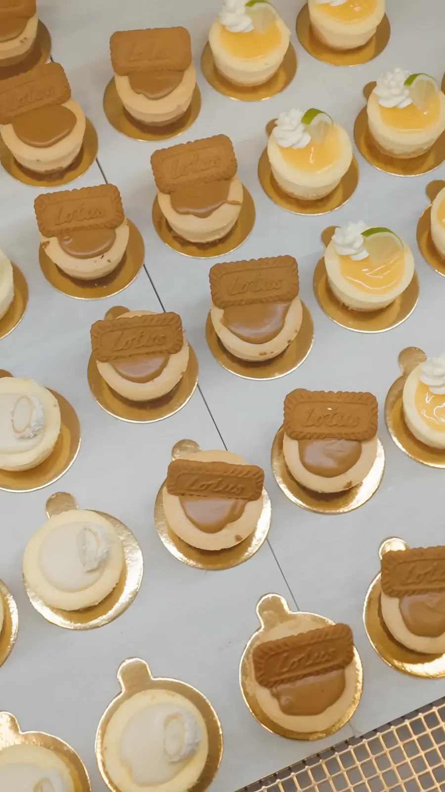
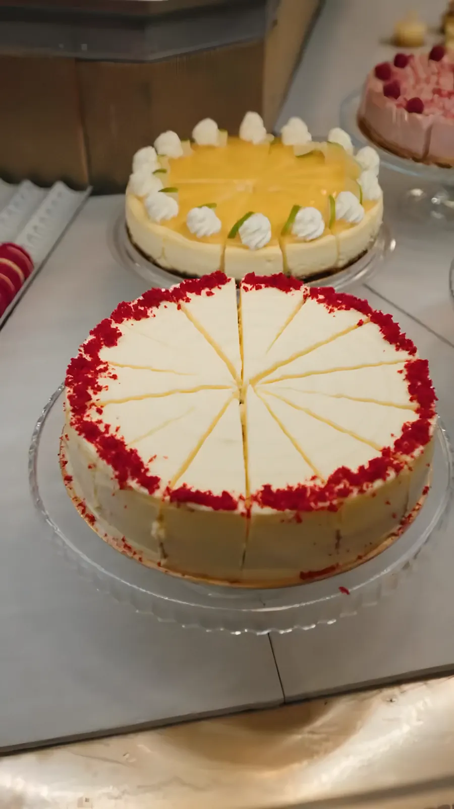
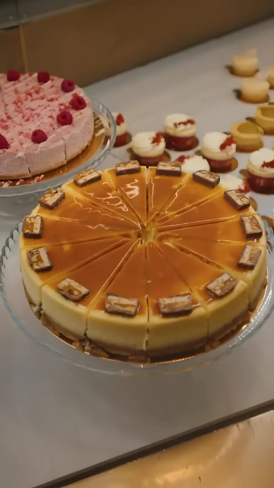
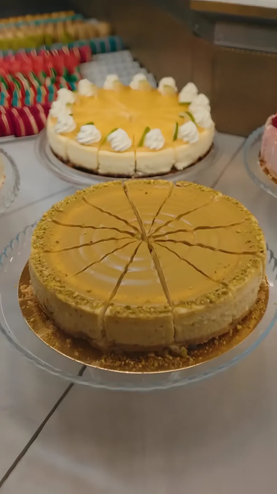
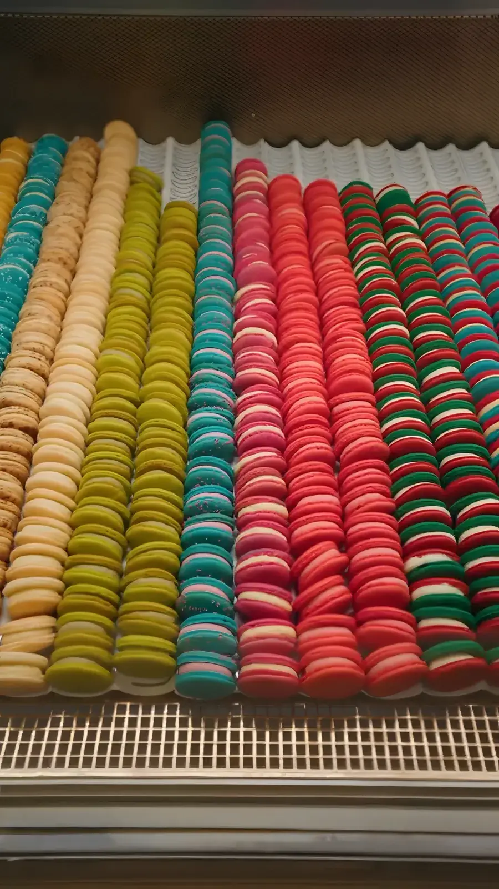
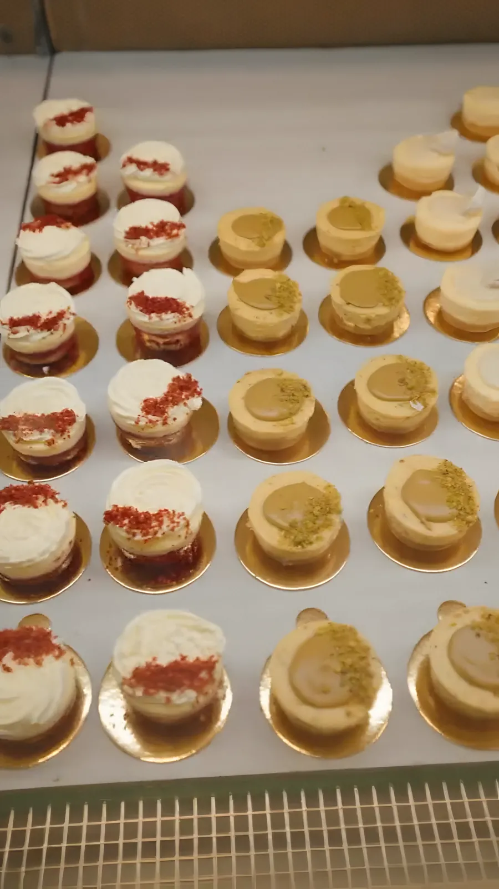
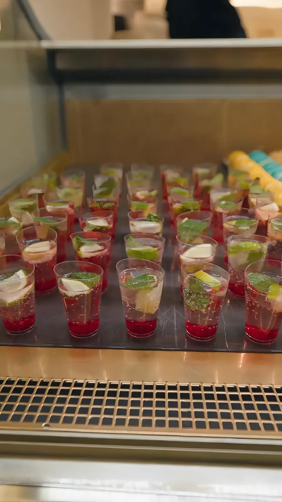
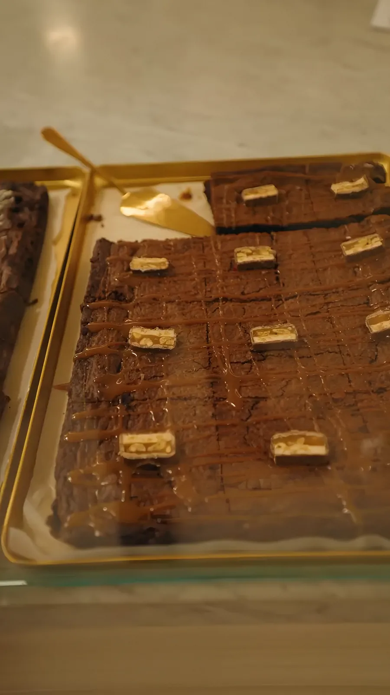
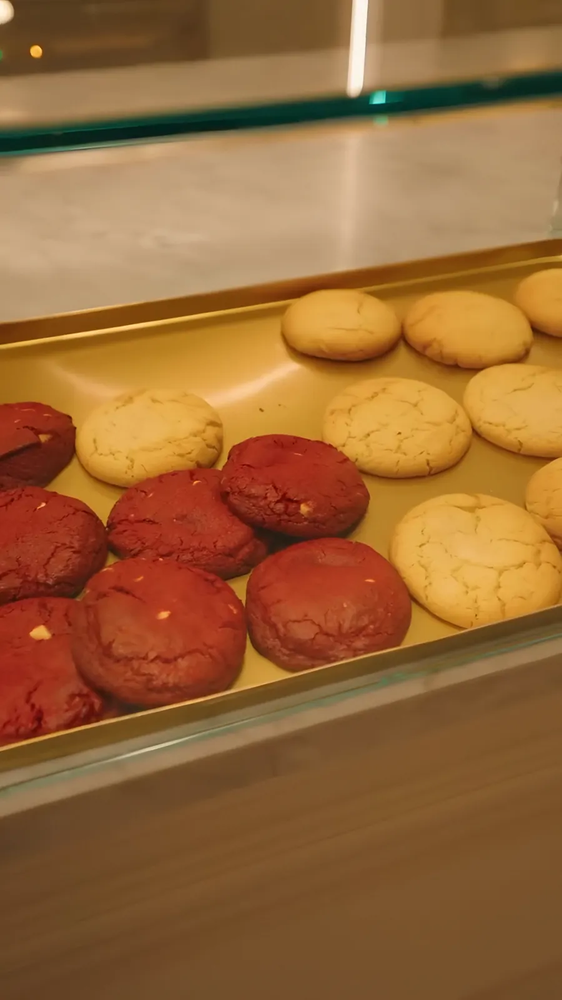
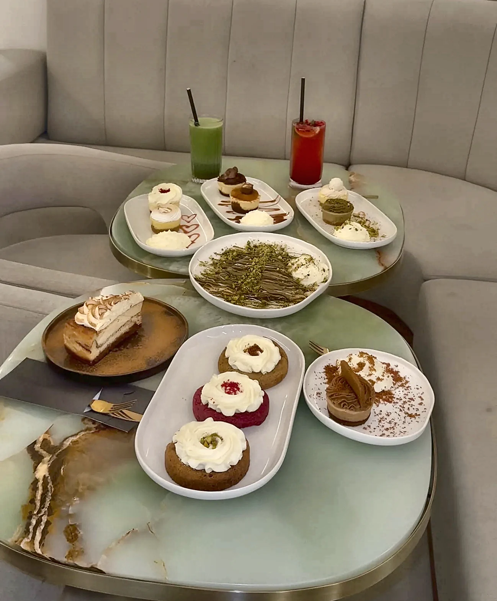

La Fuga, Cake & Brunch
West-Kruiskade 59B, Rotterdam
Taart, desserts en signature matcha, in een zaak van zacht licht en beige. Elke dag open van 13:00 tot 23:00.
Vers in de vitrine
Cheesecakes, minis, macarons en meer. Zo ziet onze vitrine eruit.









Wat er vandaag ligt, zie je in de zaak. De vitrine wisselt.
Wat wordt het vandaag?Wat wordt het vandaag?
Kies je moment en zie drie dingen om te proberen, uit de vitrine en van de kaart.
Puur een suggestie. Wat er vandaag ligt, zie je in de vitrine.
Cake match
Swipe naar rechts als je hem lekker vindt, naar links als hij niets voor je is. Na zes keer swipen zie je jouw match.
Wat gasten zeggen
4,4 op Google · 621 reviews
Lekkerste matcha ooit. Goede gebakjes en fijne service. Aanrader
Uiteindelijk zijn we voor de red velvet cheesecake gegaan en pffff, die was megaaaa lekker!
De lotus cheesecake was echt fantastisch en paste perfect bij de koffie.
Wat een aesthetically pleasing plek! Als je trek heb in je portie zoetigheid, is dit the place to be in Rotterdam.
Het interieur is ontzettend stijlvol en straalt klasse en gezelligheid uit.
Ik had een mini cheesecake echt een aanrader. Cappuccino was ook heerlijk.
Heel lekker. Kom er al jaren. Hou van de pistache pannekoeken. Kom zeker terug.
Lekkere drankjes, goeie matcha! & de desserts ook echt lekker.

Japandi en hotel chique
Zachte rondingen, warm licht en een vleugje beige luxe. Een golvend plafond vol licht, beige banken en tafels van groene onyx met een goudkleurige rand.
Na de verbouwing kregen ook het concept en de recepten een nieuwe versie, met matcha en Dubai-chocolade.
- 13:00–23:00Elke dag open
- Signature matchaStrawberry, mango, latte
4,4 op Google
Gemiddeld 4,4 uit 5 op Google, uit 621 reviews.
Where cakes & class meet
@lafuga.rotterdam op InstagramLangskomen
- Adres
- West-Kruiskade 59B
3014 AL Rotterdam - Open
- Dagelijks, 13:00–23:00
- Reserveren
- Bel 010 203 5909
West-Kruiskade 59B, 3014 AL Rotterdam
De kaart komt van Google Maps en laadt pas als je klikt.